Using Google Maps Engine Connector for QGIS¶
Google Maps Engine is a cloud based mapping platform for creating and sharing custom maps. Google Maps Engine Connector is a plugin that allows you to view and upload Google Maps Engine data from within QGIS. This tutorial will go through the process of creating a Google Maps Engine account, obtaining necessary credentials for using the connector, creating a map using Google Maps Engine and consuming the resulting map in QGIS.
Note
Disclaimer: I am the author of the Google Maps Engine Connector and currently part of the Google Maps team.
Overview of the task¶
We will take a line layer representing bike routes in San Francisco and upload it to Google Maps Engine using the plugin. Once the layer is styled and a map is created, we will add that map to QGIS as a WMS layer.
Other skills you will learn¶
- Using the Google Developer Console to set up a new project for using Google APIs.
Get the data¶
San Francisco Data is an excellent source of open data for San Francisco.
- Download the SFMTA Bikeway Network shapefile using the Export option on the portal.

Data Source: [SFMTA]
Create a Google Maps Engine account¶
- You can sign up for a free Google Maps Engine trial account. The trial account is a full featured Maps Engine instance with limited storage quota. Visit Google Maps Engine homepage and click the Get started with a free account link.
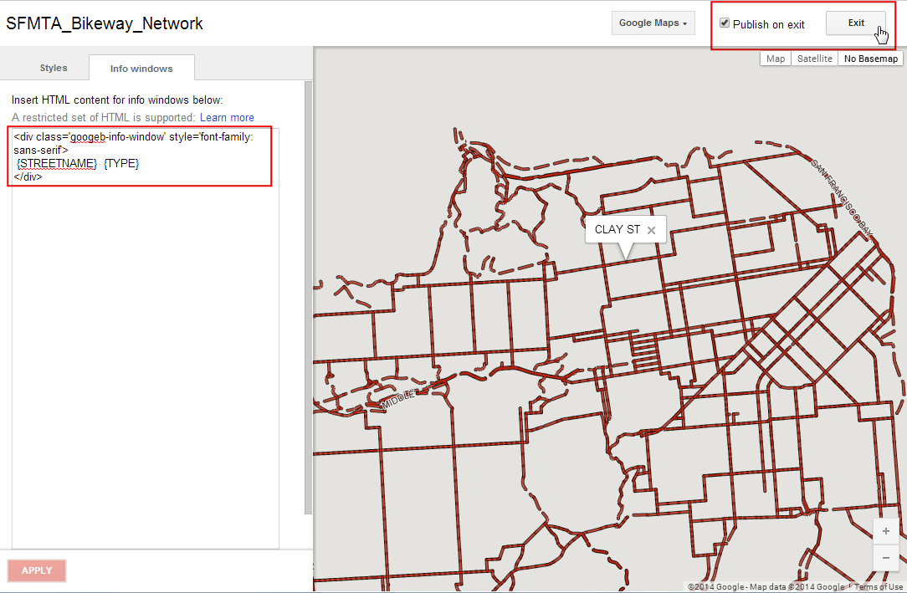
- You will need to sign-in to your Google account. If you wish to use your work email, you can create a new Google account with your work email address as well. Once signed in, you will see the Create a Maps Engine Project screen. Enter a Project Name which will identify your account when using Google Maps Engine. Accept the terms and click Accept and create button.
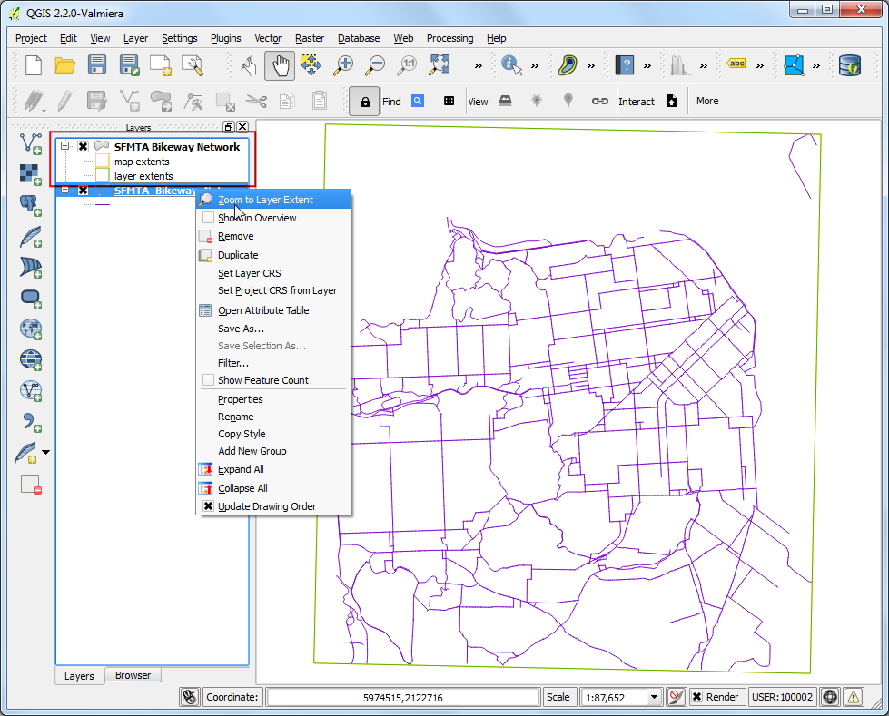
Create a Google Developer Console project¶
- The Google Maps Engine Connector uses the Google Maps Engine API to access the data stored in your account. You will need to obtain special credentials which the plugin will use to programatically access your data. Visit Google Developer Console and click Create Project. Enter GME Connector for QGIS API as the PROJECT NAME and gme-qgis-api as the PROJECT ID. These names are just a suggestion - you may use any name and id you like.
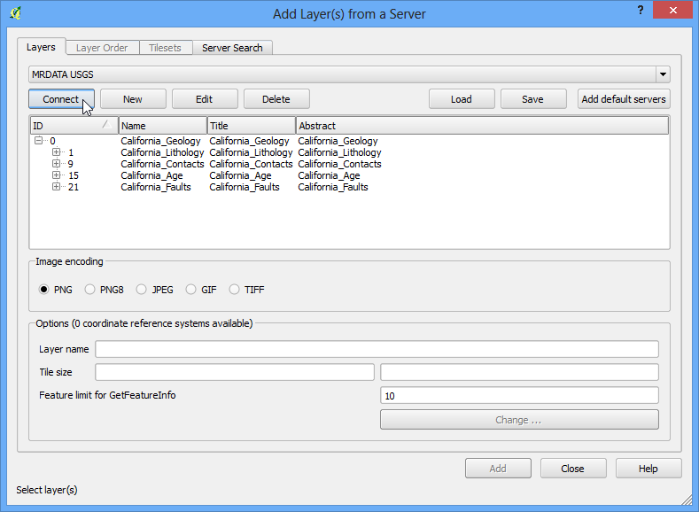
- Once the project is created, click the APIs & auth link. Scroll down and find the Google Maps Engine API. Click the OFF button to toggle it to ON.

- Next, click on the Credentials link. Click CREATE NEW CLIEND ID under the OAuth section.

- In the Create Client ID dialog, select Installed Application as the APPLICATION TYPE and Other as the INSTALLED APPLICATION TYPE. Click Create Client ID.
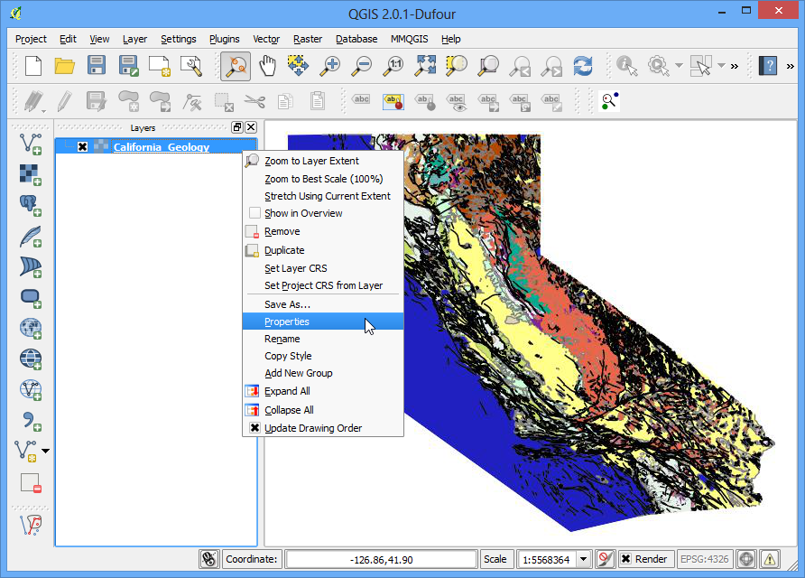
- Once the client id is created, you will see a new section called Client ID for native application. Note the Client ID and Client secret. These are the credentials you will need to use in QGIS.

- Back in QGIS, visit Plugins ‣ Manage and Install Plugins.... Find the Google Maps Engine Connector plugin and click Install plugin.

- Once the plugin is installed, you will see a new toolbar in QGIS. This toolbar contains various tools to work with Google Maps Engine. Click the More button.

- In the Advanced Settings dialog, enter the Client ID and Client Secret you obtained from Google Developer Console. Click OK.

- As you entered new API credentials, you will be prompted to log-in and authorize the plugin to use these. Sign-in to your Google account.

- Click Accept in the next screen.

- If all went well, you will see a message indicating you have successfully logged in.

- Now lets add the SFMTA Bikeway Network layer that was downloaded earlier. Go to Layer ‣ Add Vector Layer. Browse to the downloaded SFMTA_Bikeway_Network.zip file and click Open. Select the SFMTA_Bikeway_Network.shp layer and click OK.

- One of the features of the Google Maps Engine Connector plugin is the ability to upload datasets directly from QGIS. Select the SFMTA_Bikeway_Network layer and click Upload icon in the toolbar.

- In the Upload a dataset to Google Maps Engine dialog, enter a Description of the dataset. You may leave all other settings to default values. Click OK.

- The plugin will use the Google Maps Engine API to upload the layer and create a Google Maps Engine Data Source. Once the upload is finished, a new browser tab will open and take you to the newly created data source.

- The next few steps will demonstrate the process of creating a map using Google Maps Engine. Once the map is created, we will access that map using the plugin in QGIS. Once your vector table has finished processing, click Create styled layer.

- Name the layer as SFMTA_Bikeway_Network and click Create.

- Click Add rule to add a custom style for the layer.

- Choose the color and label options under the Line style section. Click Apply to view the style settings applied to your layer. You may also select No Basemap option from top-right corner to allow you to see your layer without the underlying basemap. Once you are satisfied with the styling, switch to the Info windows tab.

- Here you can specify what content is shown when a feature is clicked on the map. You can access the feature attributes using the markup {attribute_name}. In this case, we just want to display the street name for the line feature. Enter the following in the text area. Click Apply and click on any line feature on the map to test the info window code. When done, check the Publish on exit button and click Exit.
<div class='googeb-info-window' style='font-family: sans-serif'>
{STREETNAME} {TYPE}
</div>
- Click Add to map to create a map with this layer.
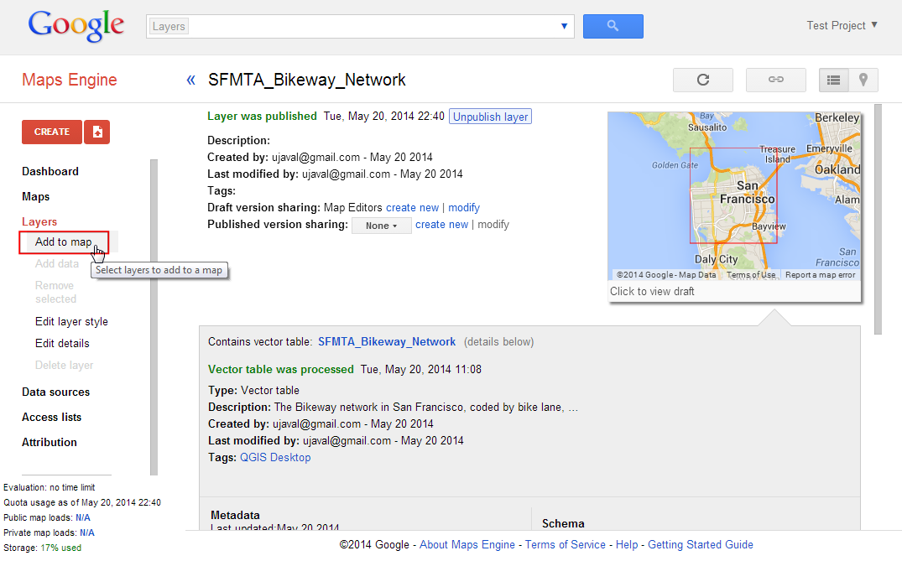
- Select Create new and enter SFMTA Bikeway Network as the Map title.

- You will see a new map containing the styled layer. You have an option of choosing different basemaps for the map. Since this is a bike path map, you can select the Terrain style basemap.
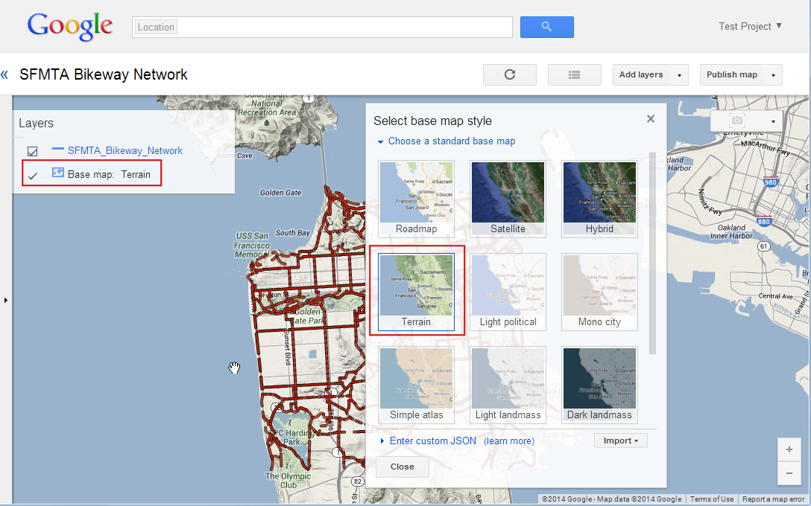
- Click Publish map.
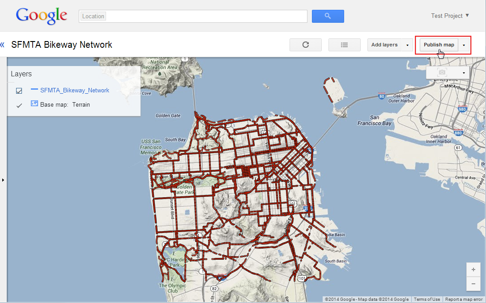
- Once the map is published, click on the Access links icon.
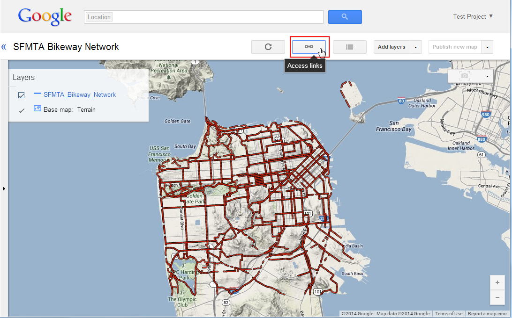
- You will see various options to view, embed and access the newly created map. Since we will be accessing the map using the QGIS plugin, you do not need any links from here.

- Back in QGIS, click the Search icon in the toolbar.
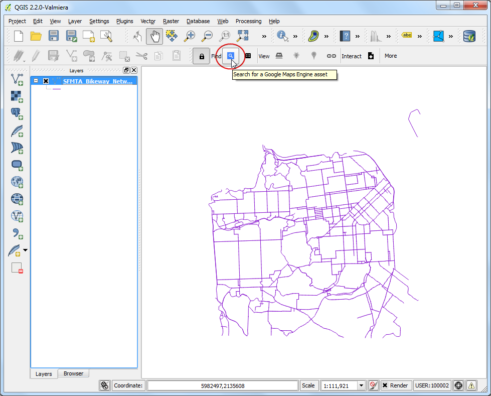
- In the Maps Engine Maps dialog, you will see your map listed. Click on the row to select it. Click Add Selected to Map.
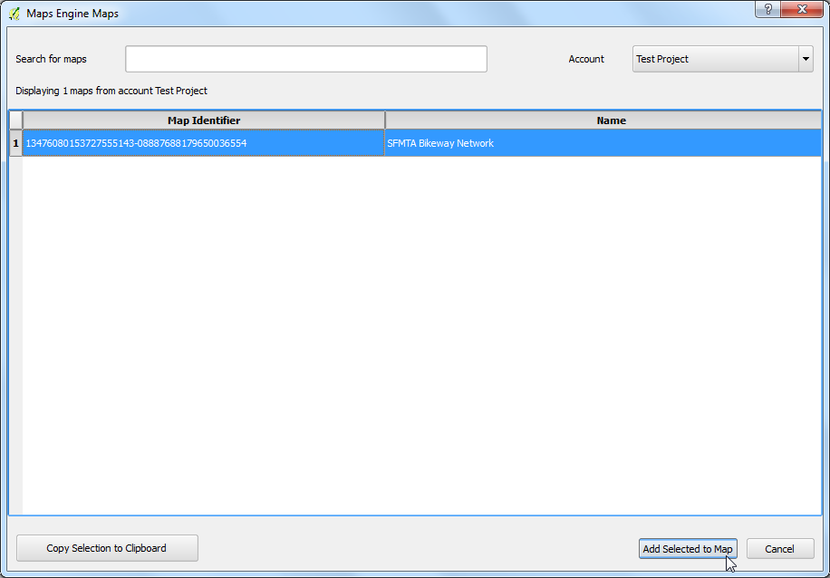
- The plugin will query Google Maps Engine and load a vector layer containing the bounding box of the map. If you do not see any data on the canvas, right-click on the SFMTA_Bikeway_Network layer and select Zoom to Layer Extent.

- Click on the bounding box layer to select it. You will notice that the View tools are now enabled. Click on the WMS Overlay icon in the toolbar.
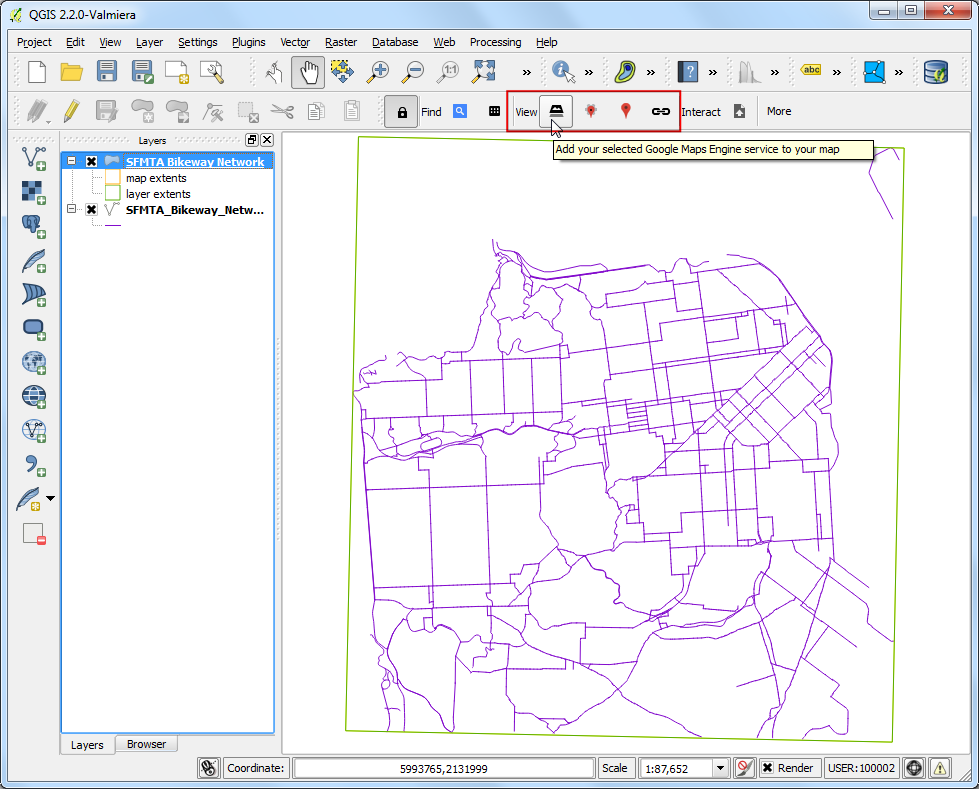
- In the Select A Layer to Add dialog, choose the SFMTA_Bikeway_Network layer and click Add Selected to Map.

- A new WMS layer will be added to QGIS and you will see your styled layer from Google Maps Engine displayed in QGIS.

Hope this tutorial gives an overview of the capabilities of the plugin. You can visit the plugin homepage to view the source code and learn more about the plugin.
Below is the Google Maps Engine map that was created for this tutorial.